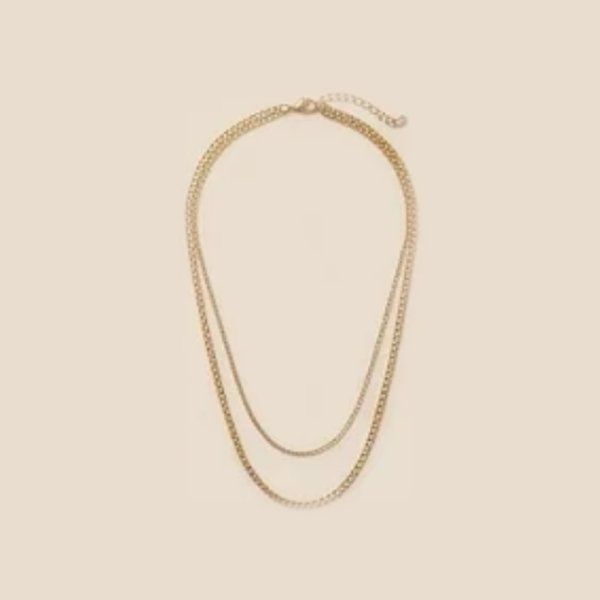

Minimal jewelry to wear every day
Everyday jewelry should be easy. You put it on in the morning, forget about it, and it still looks right at dinner. Minimal pieces do exactly that. Here is how to build a small collection that works with almost everything you own.
Disclosure: this page contains Amazon affiliate links. As an Amazon Associate I earn from qualifying purchases, at no extra cost to you.
Three easy everyday picks
If you are starting from zero, these three small sets cover earrings, a bracelet stack and a simple necklace. All are gold-tone and quiet enough to wear every day.
Earring pick
4-pair dainty gold stud set
Four pairs of small 14k gold-plated studs in one box: a pearl, a sparkly stone, a simple ball and a halo stud. The posts are surgical steel, which many people with sensitive ears prefer. One set gives you a pair for every day of the work week.
Check the price on AmazonBracelet pick
Amicon gold paperclip bracelet stack
A ready-made stack of thin 14k gold-plated chain bracelets, including a paperclip chain. Wear two for the office and the whole stack for evenings. It also makes an easy gift.
Check the price on AmazonNecklace pick
Awvialy dainty initial necklace
A tiny gold-plated letter on a fine chain. It sits just above a crew neck and layers well with a longer chain. Choose your letter on the Amazon page before you order.
Check the price on AmazonStart with four basics
A pair of small hoops or studs, a fine chain necklace, a simple ring and a slim bracelet. These four cover most outfits, and each one can be worn alone or together.
Shop dainty jewelry sets on Amazon
Choose one tone and stay with it
Matching your metals makes a look feel intentional. Gold-tone is warm and goes well with neutrals, browns and cream. Silver-tone is cooler and suits black, grey and blue. Mixing both can look great too, as long as you repeat each tone at least twice, for example a silver ring and silver earrings with a gold necklace and gold bracelet.

Shop gold hoop earrings on Amazon
Layer with space
Two or three necklaces of different lengths look elegant when the lengths are clearly different, about 3 to 5 cm apart. Keep the thinnest chain shortest. If you wear a statement piece, leave the rest simple.

Shop layered necklaces on Amazon
Match jewelry to your neckline
A V-neck suits a pendant that points down. A crew neck pairs well with a short chain that sits just above the collar. A shirt with a collar looks best with earrings and a bracelet, and no necklace.
Shop pendant necklaces on Amazon
Keep it looking new
Put your jewelry on after perfume and hairspray, and take it off before swimming, showering and sleeping. Wipe each piece with a soft dry cloth and store it separately, so chains do not tangle and pieces do not scratch each other.
Shop by style
More ideas to compare on Amazon: